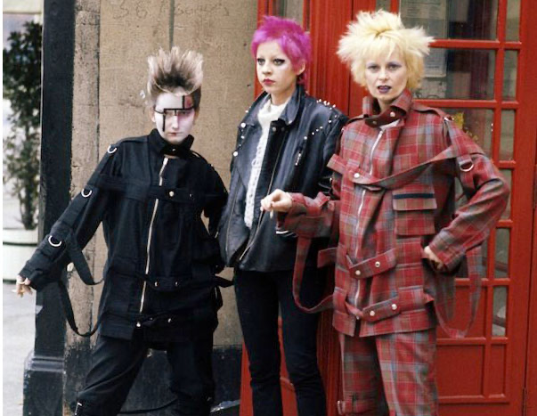

Dame Vivienne Isabel Westwood (née Swire; 8 April 1941 – 29 December 2022) was an English fashion designer and businesswoman, largely responsible for bringing modern punk and new wave fashions into the mainstream.[6] In 2022, Sky Arts ranked her the 4th most influential artist in Britain of the last 50 years.[7]
Westwood came to public notice when she made clothes for the boutique that she and Malcolm McLaren ran on King's Road, which became known as Sex. Their ability to synchronise clothing and music shaped the 1970s UK punk scene, which included McLaren's band, the Sex Pistols. She viewed punk as a way of "seeing if one could put a spoke in the system".[8]
Westwood opened four shops in London and eventually expanded throughout Britain and the world, selling a varied range of merchandise, some of which promoted her political causes such as the Campaign for Nuclear Disarmament, climate change and civil rights groups.[9][10]
biography
Born
Vivienne Isabel Swire
8 April 1941
Hollingworth, Cheshire, England
Died
29 December 2022 (aged 81)
Clapham, London, England
Alma mater
University of Westminster
Occupations
Primary school teacher
Fashion designer
Businesswoman
Activist
Label
Vivienne Westwood
Spouses
Derek Westwood (m. 1962; div. 1965)
Malcolm McLaren (m. 1967; div. 1980)
Andreas Kronthaler (m. 1993)
Children
2, including Joseph Corré
Awards
British Fashion Designer of the Year (1990, 1991, 2006)
early years
Westwood was born in Hollingworth, Cheshire,[11][12] on 8 April 1941.[13][14] She grew up in nearby Tintwistle, and was the daughter of Gordon Swire and Dora Swire (née Ball), who had married two years previously, two weeks after the outbreak of the Second World War.[15] At the time of Vivienne's birth, her father was employed as a storekeeper in an aircraft factory; he had previously worked as a greengrocer.[15]
In 1958, her family moved to Harrow, Greater London. Westwood took a jewellery and silversmith course at the University of Westminster, then known as the Harrow Art School,[16] but left after one term, saying: "I didn't know how a working-class girl like me could possibly make a living in the art world".[17] After taking a job in a factory and studying at a teacher-training college, she became a primary-school teacher. During this period, she created her own jewellery, which she sold at a stall on Portobello Road.[14]
In 1962, she met Derek Westwood, an apprentice at the Hoover factory, in Harrow.[18] They married on 21 July 1962; Westwood made her own wedding dress.[18] In 1963, she gave birth to a son, Benjamin.[18]
punk era
Westwood was one of the architects of the punk fashion phenomenon of the 1970s, saying "I was messianic about punk, seeing if one could put a spoke in the system in some way".[18] Westwood's emergence as a designer who made garments that reflected the economic, social, and political contexts of 1970s Britain coincided with a disillusioned youth, who developed a unique style of dress and musical expression which was instantly identifiable through its aesthetic and sound.[21]
Westwood's boutique, originally managed with McLaren, was a meeting place for early members of the London punk scene. The boutique regularly changed names and interior design through the 1970s to fit with collections and design inspirations. It remains in its original location at 430 Kings Road, Chelsea, London (under the name Worlds End since 1980, following a short period of closure in the 1980s) to this day.
McLaren and Westwood were keen entrepreneurs, and their designs sold in their boutique – named Let It Rock, Too Fast To Live Too Young To Die, Sex, and subsequently Seditionares – helped to define and market the punk look at the exact moment that it exploded in popularity on the streets of London.[22] Westwood's designs during the Punk Era and thereafter were informed by historicism; the V&A describing Westwood as "a meticulous researcher".[23] Westwood began challenging gender norms and promoting experimentation in her designs, which at the outset were created in collaboration with McLaren.
Westwood also inspired the style of punk icons, such as Viv Albertine, who wrote in her memoir, "Vivienne and Malcolm use clothes to shock, irritate and provoke a reaction but also to inspire change. Mohair jumpers, knitted on big needles, so loosely that you can see all the way through them, T-shirts slashed and written on by hand, seams and labels on the outside, showing the construction of the piece; these attitudes are reflected in the music we make. It's OK to not be perfect, to show the workings of your life and your mind in your songs and your clothes."
Westwood was disenchanted with the direction that adoptees had taken punk in, many of them uninterested in punk's political values, viewing the style of the movement as a marketing opportunity instead of a medium for radical change; with the dissolution of the Sex Pistols, Westwood's inspiration for her eponymous line shifted instead to the 18th century.[26] She was particularly influenced by Pirates and the Incroyables and merveilleuses a radical movement amongst nobles who had survived the French Revolution which referenced the guillotine to which many had lost family members.
fashion collections
Westwood's designs were independent and represented a statement of her own values. She collaborated on occasion with Gary Ness, who assisted Westwood with inspirations and titles for her collections.
McLaren and Westwood's first fashion collection to be shown to the media and potential international buyers was Pirate, combining 18th and 19th century dress, British history and textiles with African prints.[33] This was the first time in which Westwood explored her inspiration of historic sources in current day couture, the Pirate runway had featured both rap and an array of ethnic music.[28] Subsequently, their partnership, which was underlined by the fact that both their names appeared on all labelling, produced collections in Paris and London with the thematic titles Savages (shown late 1981), Buffalo/Nostalgia Of Mud (shown spring 1982), Punkature (shown late 1982), Witches (shown early 1983) and Worlds End 1984 (later renamed Hypnos, shown late 1983).[34] After the partnership with McLaren was dissolved, Westwood showed one more collection under the Worlds End label: Clint Eastwood (late 1984–early 1985).
In 2007, Westwood was approached by the Chair of King's College London, Patricia Rawlings, to design an academic gown for the college after it had successfully petitioned the Privy Council for the right to award degrees.[41] In 2008, the Westwood-designed academic dresses for King's College were unveiled. On the gowns, Westwood commented: "Through my reworking of the traditional robe I tried to link the past, the present and the future. We are what we know."
Westwood worked closely with Richard Branson to design uniforms for the Virgin Atlantic crew. The uniform for the female crew consisted of a red suit, which accentuated the women's curves and hips, and had strategically placed darts around the bust area. The men's uniform consisted of a grey and burgundy three-piece suit with details on the lapels and pockets. Westwood and Branson were both passionate about using sustainable materials throughout their designs to reduce the impact on the environment and so used recycled polyester.